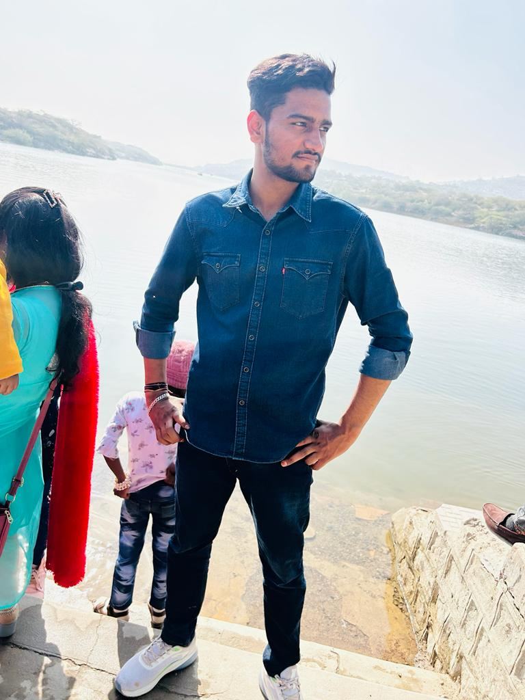

Rahul Yadav
Computer Science Student

Profile:-
Enthusiastic and dedicated Computer Science student with a keen interest in data analysis and web development. Seeking opportunities to apply my skills in Python, Java, and C to contribute effectively to projects aimed at promotinggender equality and other social causes. As a passionate Computer Sciencestudent with profound interest in leveraging technology for social progress, myobjective is to apply my knowledge and skills in programming and webdevelopment towards addressing critical societal issues.D
Education:
2019-2022
ST. ANGEL'S CONVENT SCHOOL
- 83%:- 12th(PCM) in RBSE Board
- 83%:- 10th in RBSE Board
2022-2026
JK LAXMIPAT UNIVERSITY
-
Bachelor of Technology (B.Tech) in Computer Science
JK Laxmipat University, Mahapura
Expected Graduation: 2026
GPA: 6.3
Skills:
- Project Management
- Teamwork
- Time Management
- Critical thinking
- CAD modelling
Languages:
- Python
- Java
- C
- HTML
- CSS
- JavaScript
Specialization:
Cyber Security
Web development
- Basic Knowledge of HTML, CSS, JavaScript languages
- Certificate of Web development from Udemy
Projects & Work:
- Project on Sustainable development in Gender Inequality for Data Analysis(Python)
- Implemented user-friendly interface for various services such as bookings, inqueries and customer support using tkinter in python
Reference:
Contact